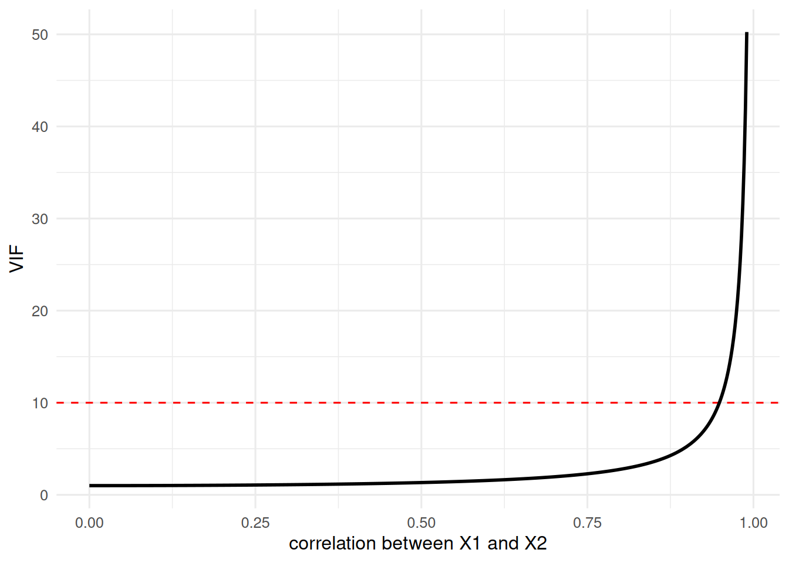

One predictor is rarely enough. The world is multivariate: college GPA depends on high-school GPA and study time and sleep and a dozen other things. Multiple regression (often called MRC, for Multiple Regression/Correlation) is simply the line from the last chapter grown a dimension:
\[y = b_1 x_1 + b_2 x_2 + \cdots + b_k x_k + a\]
The logic does not change one bit. We still minimize the sum of squared residuals, and we still quantify our uncertainty about every coefficient. What does change, and what trips up almost everyone, is what a coefficient now means when the predictors are tangled up with each other. That tangle is the story of this chapter.
16.1 Learning Objectives
Understand what a regression coefficient means when other predictors are present (partialling).
Distinguish the semipartial correlation, the partial correlation, and the standardized coefficient.
Interpret \(R\), \(R^2\), and adjusted \(R^2\) as ratios of variance.
Diagnose multicollinearity with the VIF and know your options for dealing with it.
16.2 Some Deliberately Tangled Data
To see the interesting behavior, we need predictors that are correlated with each other. The cleanest way to manufacture that is to build them from a shared source, then add noise - so we know the truth going in.
NoteWorking in SPSS, Julia, or Python?
The code tabs below assume this chapter’s data is already loaded. Grab the one-file setup for your language from Getting the Book’s Data, run it once, then load what you need by name - this chapter uses ch15-tangled, ch15-typess. For example, book_data("ch15-tangled") in R, Julia, or Python, or !bookdata name = "ch15-tangled". in SPSS. Every language reads the same shipped files, so your numbers will match the ones printed here exactly.
library(tidyverse) # dplyr, ggplot2, purrr, tibble, readr, stringr, forcatslibrary(broom) # tidy(), glance(), augment() for model outputsource("_common.R") # book-wide helpers: round2(), fmt_p(), tidy2()set.seed(1936) # Fisher's "The Design of Experiments"base <-rnorm(100)dat <-tibble(y = base +rnorm(100),x1 = base +rnorm(100),x2 = base +rnorm(100))# x1 and x2 are correlated because they share 'base'dat |>cor() |>as_tibble(rownames ="variable") |>round2()
Here is the puzzle that drives the chapter. If you regress y on x1alone, you get one slope. In the joint model above you get a different slope. Why? Because in the joint model, b1 is the effect of x1with x2 held constant - it has been partialled. R did not lie to you in either model; the two slopes answer two different questions.
16.3 Three Things People Confuse
When predictors overlap, there are three distinct quantities, and sloppy language treats them as one. Picture the classic Venn diagram from Cohen, Cohen, West, and Aiken (Aiken 2002): circle \(Y\) overlaps circles \(X_1\) and \(X_2\), and \(X_1\) and \(X_2\) overlap each other. Label the piece of \(Y\) that only\(X_1\) explains as area \(a\), and the piece \(Y\) has left over (unexplained) as area \(e\).
Semipartial correlation\(sr_1\): the unique slice, \(sr_1^2 = a\). “How much of all of Y’s variance does \(x_1\) uniquely explain?”
Partial correlation\(pr_1\): the unique slice relative to what is left to explain, \(pr_1^2 = \frac{a}{a+e}\). “Of the Y variance not already explained by \(x_2\), how much does \(x_1\) explain?”
Standardized regression coefficient\(\beta_1\): the slope R reports when everything is standardized. This is what lm() gives you.
All three are built from the same three correlations, but they are not the same number. Here they are, by formula:
r <- dat |>summarise(r_y1 =cor(x1, y), r_y2 =cor(x2, y), r_12 =cor(x1, x2))r |>summarise(# semipartial correlation of x1 (unique slice = area a)semipartial = (r_y1 - r_y2 * r_12) /sqrt(1- r_12^2),# partial correlation of x1 (a / (a + e))partial = (r_y1 - r_y2 * r_12) /sqrt((1- r_y2^2) * (1- r_12^2)),# standardized regression coefficient (beta) for x1beta = (r_y1 - r_y2 * r_12) / (1- r_12^2) ) |>round2()
semipartial
partial
beta
0.23
0.28
0.28
Notice they share the same numerator and differ only in the denominator - which is exactly why they get muddled. Let us confirm that \(\beta_1\) is really the standardized slope R reports:
datz <- dat |>mutate(across(everything(), \(v) (v -mean(v)) /sd(v)))lm3z <-lm(y ~ x1 + x2, data = datz)tidy2(lm3z) |>filter(term =="x1") # compare to beta above
term
estimate
std.error
statistic
p.value
x1
0.28
0.1
2.89
0.005
INSERT FILE='data/sim/ch15-tangled.sps'.
* REGRESSION prints the standardized Beta by default.
REGRESSION /STATISTICS COEFF R ANOVA /DEPENDENT y /METHOD=ENTER x1 x2.
Model Summary (y)
+---+--------+-----------------+--------------------------+
| R |R Square|Adjusted R Square|Std. Error of the Estimate|
+---+--------+-----------------+--------------------------+
|.61| .37| .36| 1.12|
+---+--------+-----------------+--------------------------+
ANOVA (y)
+----------+--------------+--+-----------+-----+----+
| |Sum of Squares|df|Mean Square| F |Sig.|
+----------+--------------+--+-----------+-----+----+
|Regression| 71.46| 2| 35.73|28.28|.000|
|Residual | 122.57|97| 1.26| | |
|Total | 194.03|99| | | |
+----------+--------------+--+-----------+-----+----+
Coefficients (y)
+----------+----------------------------+-------------------------+----+----+
| | Unstandardized Coefficients|Standardized Coefficients| | |
| +-----------+----------------+-------------------------+ | |
| | B | Std. Error | Beta | t |Sig.|
+----------+-----------+----------------+-------------------------+----+----+
|(Constant)| -.07| .11| .00|-.58|.565|
|x1 | .27| .09| .28|2.89|.005|
|x2 | .39| .10| .40|4.06|.000|
+----------+-----------+----------------+-------------------------+----+----+
Same number. So the coefficient lm() reports is a partial effect: it controls for the other predictors. That is the single most important sentence in multiple regression. When someone says “controlling for X,” this is the machinery they are invoking.
Important\(sr\) vs. \(pr\) vs. \(\beta\) - Say It Out Loud
The semipartial (\(sr\)) is \(x_1\)’s unique contribution measured against all of Y. Square it and you get the increase in \(R^2\) from adding \(x_1\) last. This is usually the one you want to report.
The partial (\(pr\)) measures the same unique contribution but against only the unexplained part of Y, so it is always at least as large in magnitude as the semipartial.
The standardized coefficient (\(\beta\)) is the slope, in standard-deviation units, and is what the model uses to predict.
Three questions, three numbers. Do not let a textbook (or a reviewer) tell you they are interchangeable.
16.4\(R\), \(R^2\), and the “Shrunken” \(R^2\)
Statistics is about variance, and \(R^2\) is the cleanest variance story we have. \(R\) is just the correlation between what we observed and what the model predicts; \(R^2\) is the ratio of predicted-to-total variance:
That is it: \(R^2 = \frac{\text{var}(\hat{y})}{\text{var}(y)}\), the fraction of Y’s variance the model reproduces. But \(R^2\) has a flaw: add any predictor, even pure noise, and it never goes down. So we penalize it for complexity to get the adjusted (or “shrunken”) \(R^2\):
n <-nrow(dat); k <-2tibble(R2_adj =1- (1- R2) * (n -1) / (n - k -1),adj_from_glance =glance(lm3)$adj.r.squared) |>round2()
R2_adj
adj_from_glance
0.36
0.36
The adjustment is why you should never judge a model by raw \(R^2\) alone. Throw in enough predictors and you can make \(R^2\) look impressive while the model is worthless.
16.5 Testing the Coefficients (Rebuilding the Table Again)
As always, we do not trust the machine until we can reproduce it. The standard error of a coefficient is:
where the variance inflation factor\(\text{VIF}_1 = \frac{1}{1 - R^2_1}\), and \(R^2_1\) comes from regressing \(x_1\) on all the other predictors. Watch:
R2_1 <-glance(lm(x1 ~ x2, data = dat))$r.squared # x1 explained by x2VIF1 <-1/ (1- R2_1)b1 <-tidy(lm3) |>filter(term =="x1") |>pull(estimate)SEb1 <- (sd(dat$y) /sd(dat$x1)) *sqrt(VIF1) *sqrt((1- R2) / (n - k -1))tibble(SE = SEb1, t = b1 / SEb1) |>mutate(p =2*pt(-abs(t), df = n - k -1), # df = n - k - 1, NOT n - 1p =fmt_p(p)) |>round2()
SE
t
p
0.09
2.89
0.005
tidy2(lm3) |>filter(term =="x1") # compare
term
estimate
std.error
statistic
p.value
x1
0.27
0.09
2.89
0.005
The by-hand values match R’s table. Two things to burn in:
The degrees of freedom for a coefficient’s \(t\) test are \(n - k - 1\) - we spend one df per predictor and one for the intercept. (An older version of this lecture used \(n - 1\) here; that is wrong, and with several predictors it matters.)
The VIF sits right inside the standard error. When predictors are collinear, VIF climbs, the SE inflates, \(t\) shrinks, and your once-significant predictor goes quiet, even though nothing about the relationship changed. Collinearity does not bias your slopes; it makes them imprecise.
For the whole model, the omnibus test is an \(F\) built from \(R^2\):
\[F = \frac{R^2 / k}{(1 - R^2)/(n - k - 1)} \quad \text{with } df_1 = k,\ df_2 = n - k - 1\]
Fmodel <- (R2 / k) / ((1- R2) / (n - k -1))tibble(F = Fmodel,p =pf(Fmodel, df1 = k, df2 = n - k -1, lower.tail =FALSE)) |>mutate(p =fmt_p(p)) |>round2()
F
p
28.28
< .001
# compare: glance() reports the same F, its df, and its pglance(lm3) |>select(statistic, df, df.residual, p.value) |>mutate(p.value =fmt_p(p.value)) |>round2()
statistic
df
df.residual
p.value
28.28
2
97
< .001
16.6 Multicollinearity: Seeing the Damage
Let us watch the VIF at work directly. As two predictors become more correlated, the VIF explodes:
tibble(r =seq(0, 0.99, length.out =500)) |>mutate(VIF =1/ (1- r^2)) |>ggplot(aes(x = r, y = VIF)) +# a common (rough) rule-of-thumb thresholdgeom_hline(yintercept =10, colour ="red", linetype ="dashed") +geom_line(linewidth =1) +labs(x ="correlation between X1 and X2", y ="VIF") +theme_book()

Figure 16.1: The variance inflation factor as two predictors grow more correlated. Past about .95 it climbs steeply; the dashed line marks the rough VIF = 10 rule of thumb.
Past a correlation of about 0.95 the curve rises very steeply. A predictor that is 95% predictable from the others carries almost no unique information, so the model cannot pin down its slope. The red line marks a rough \(\text{VIF} = 10\) rule of thumb, but treat it as a warning sign, not a hard rule.
16.7 Partitioning Variance: Types of Sums of Squares
The VIF told us that collinearity inflates our uncertainty. Here is the deeper reason, and it is a matter of bookkeeping: when predictors overlap, the variance they jointly explain cannot be cleanly assigned to one or the other. How you divide it up is a choice, and there are three main conventions, the types of sums of squares.
Type I (sequential). Each predictor is credited with the variance it explains after the predictors entered before it. It is order-dependent, and the pieces add up to the model total. Watch the credit shift when we swap the order:
# x2 first, then x1 - same data, different splitanova(lm(y ~ x2 + x1, data = d2)) |>tidy() |>slice(1:2) |>select(term, sumsq) |>round2()
term
sumsq
x2
100.06
x1
14.79
INSERT FILE='data/sim/ch15-typess.sps'.
* Type I (sequential) sums of squares; DESIGN order sets the entry order.
UNIANOVA y WITH x1 x2 /METHOD=SSTYPE(1) /DESIGN=x1 x2.
UNIANOVA y WITH x1 x2 /METHOD=SSTYPE(1) /DESIGN=x2 x1.
/tmp/Rtmp0XAXWG/file371b13bb6434.sps:3.1-3.8: error: UNIANOVA: UNIANOVA is not
yet implemented.
3 | UNIANOVA y WITH x1 x2 /METHOD=SSTYPE(1) /DESIGN=x1 x2.
| ^~~~~~~~
/tmp/Rtmp0XAXWG/file371b13bb6434.sps:4.1-4.8: error: UNIANOVA: UNIANOVA is not
yet implemented.
4 | UNIANOVA y WITH x1 x2 /METHOD=SSTYPE(1) /DESIGN=x2 x1.
| ^~~~~~~~
usingCSV, DataFramesdf = CSV.read("data/sim/ch15-typess.csv", DataFrame)usingGLM# Julia's GLM has no anova() table. Its equivalent is ftest() over NESTED# models, which is what a Type I split really is: add one term at a time and# ask what each addition bought. Swap the order and the credit moves.ftest(lm(@formula(y ~1), df).model,lm(@formula(y ~ x1), df).model,lm(@formula(y ~ x1 + x2), df).model)ftest(lm(@formula(y ~1), df).model,lm(@formula(y ~ x2), df).model,lm(@formula(y ~ x2 + x1), df).model)
import pandas as pddf = pd.read_csv("data/sim/ch15-typess.csv")import statsmodels.formula.api as smffrom statsmodels.stats.anova import anova_lm# typ=1 is the sequential (Type I) split, so the credit depends on term# order; swap the formula terms and the sums of squares move.anova_lm(smf.ols("y ~ x1 + x2", data=df).fit(), typ=1)anova_lm(smf.ols("y ~ x2 + x1", data=df).fit(), typ=1)
df sum_sq mean_sq F PR(>F)
x1 1.0 92.771667 92.771667 85.307580 4.148334e-17
x2 1.0 22.077438 22.077438 20.301163 1.132804e-05
Residual 197.0 214.236748 1.087496 NaN NaN
df sum_sq mean_sq F PR(>F)
x2 1.0 100.055608 100.055608 92.005480 4.016262e-18
x1 1.0 14.793497 14.793497 13.603264 2.920044e-04
Residual 197.0 214.236748 1.087496 NaN NaN
Same data, same model, but x1 is credited with far more variance when it enters first. Whoever goes first gets the shared variance. Sequential sums of squares reward order, which is appropriate when theory dictates an order and misleading when it does not.
Type III (unique, or “each last”). Each predictor is credited only with the variance that is uniquely its own, the part no other predictor can account for. This is order-free: every predictor is evaluated as if it had entered last. It is exactly the squared semipartial correlation from earlier in this chapter, and you can read it off as the drop in fit when you remove that one predictor from the full model:
full <-lm(y ~ x1 + x2, data = d2)# the drop in fit when each predictor is removed from the full modelx1_unique <-anova(lm(y ~ x2, data = d2), full) |>tidy() |>pull(sumsq) |>last()x2_unique <-anova(lm(y ~ x1, data = d2), full) |>tidy() |>pull(sumsq) |>last()tibble(x1_unique = x1_unique, # what x1 adds, controlling x2x2_unique = x2_unique) |># what x2 adds, controlling x1round2()
x1_unique
x2_unique
14.79
22.08
INSERT FILE='data/sim/ch15-typess.sps'.
* Type III (unique / "each last") sums of squares; SPSS's default.
UNIANOVA y WITH x1 x2 /METHOD=SSTYPE(3) /DESIGN=x1 x2.
/tmp/Rtmp0XAXWG/file371b5c622a99.sps:3.1-3.8: error: UNIANOVA: UNIANOVA is not
yet implemented.
3 | UNIANOVA y WITH x1 x2 /METHOD=SSTYPE(3) /DESIGN=x1 x2.
| ^~~~~~~~
usingCSV, DataFramesdf = CSV.read("data/sim/ch15-typess.csv", DataFrame)usingGLM# Type III (unique): compare the FULL model against the model with one term# dropped, which is exactly "what does this predictor add, controlling for# everything else".full =lm(@formula(y ~ x1 + x2), df)ftest(lm(@formula(y ~ x2), df).model, full.model) # what x1 addsftest(lm(@formula(y ~ x1), df).model, full.model) # what x2 adds
import pandas as pddf = pd.read_csv("data/sim/ch15-typess.csv")import statsmodels.formula.api as smffrom statsmodels.stats.anova import anova_lm# Type III (unique) sums of squares: each term controlling for all others.anova_lm(smf.ols("y ~ x1 + x2", data=df).fit(), typ=3)
sum_sq df F PR(>F)
Intercept 0.717364 1.0 0.659648 0.417665
x1 14.793497 1.0 13.603264 0.000292
x2 22.077438 1.0 20.301163 0.000011
Residual 214.236748 197.0 NaN NaN
These do not depend on order, but they do not add up to the model total:
The gap is the shared variance - the part both predictors could explain, which Type III refuses to award to either. With collinear predictors that shared piece can be large (here it is most of the model), and that is the collinearity problem stated exactly: much of the explained variance cannot be attributed to one predictor over the other.
Type II sits between the two: like Type III it credits each term controlling for the others, but it respects marginality (a main effect is tested controlling for other main effects, but not for the interactions that contain it). For a model without interactions, Type II and Type III agree.
ImportantWhich type to report is an interpretive choice
There is no universally correct type; there is the type that answers your question.
Use Type I when the predictors have a genuine, theory-given order: enter the control variable first and the variable of interest last, then read its sequential contribution.
Use Type III (the default in much of psychology, and what standardized coefficients and semipartial correlations report) when you want each predictor’s unique contribution, controlling for all the others.
The point to carry away is this: whenever predictors are correlated, some of the explained variance is shared and unattributable, and different conventions handle it differently. Reporting a single “variance explained by X” without saying how you partitioned it is incomplete. Collinearity is not only a nuisance to diagnose with a VIF; it is a real limit on what the data can say about any one predictor, and how you partition the variance is part of the answer.
16.8 Six Ways to Deal With Collinearity
There is no single fix; there are trade-offs. In rough order of how often they are the right call:
Delete a redundant predictor. If two variables measure nearly the same thing, you probably do not need both. Cheapest fix, but you lose whatever unique signal was there.
Combine them. Average the standardized predictors into a single composite (the code is just below). Often the most defensible move when the predictors are indicators of one underlying construct.
Use a shrinkage method (e.g., ridge regression), which deliberately trades a little bias for a lot of stability.
Reduce to principal components and regress on those - orthogonal by construction, so VIF becomes 1, at the cost of interpretability.
Center the predictors (subtract the mean). This does nothing for correlational collinearity, but it removes the nonessential collinearity created by interaction and polynomial terms - which is why we center before building those.
Impose logical order. Sometimes theory tells you which predictor comes “first,” and you enter them hierarchically rather than pretending they compete on equal footing.
One predictor, no collinearity, and often a cleaner story than two fighting over the same variance.
16.9 A Real Example: Predicting College GPA
Let’s leave the simulated world and put all of this to work on the real GPA dataset from the last chapter. There we predicted college GPA from high-school GPA alone. Now we add the other things an admissions office actually has: SAT total and the quality of the applicant’s letters of recommendation.
<class 'statsmodels.iolib.summary.Summary'>
"""
OLS Regression Results
==============================================================================
Dep. Variable: CollegeGPA R-squared: 0.400
Model: OLS Adj. R-squared: 0.381
Method: Least Squares F-statistic: 21.31
Date: Tue, 01 Sep 2026 Prob (F-statistic): 1.16e-10
Time: 15:42:52 Log-Likelihood: -87.001
No. Observations: 100 AIC: 182.0
Df Residuals: 96 BIC: 192.4
Df Model: 3
Covariance Type: nonrobust
==============================================================================
coef std err t P>|t| [0.025 0.975]
------------------------------------------------------------------------------
Intercept -0.1533 0.323 -0.475 0.636 -0.794 0.488
HSGPA 0.3764 0.114 3.294 0.001 0.150 0.603
SATtotal 0.0012 0.000 4.046 0.000 0.001 0.002
QLOR 0.0227 0.051 0.445 0.657 -0.079 0.124
==============================================================================
Omnibus: 1.679 Durbin-Watson: 1.906
Prob(Omnibus): 0.432 Jarque-Bera (JB): 1.658
Skew: 0.303 Prob(JB): 0.437
Kurtosis: 2.823 Cond. No. 5.71e+03
==============================================================================
Notes:
[1] Standard Errors assume that the covariance matrix of the errors is correctly specified.
[2] The condition number is large, 5.71e+03. This might indicate that there are
strong multicollinearity or other numerical problems.
"""
Every coefficient here is a partial effect - the pull of that predictor with the other two held constant. Notice HSGPA’s slope shrank from its bivariate value: some of what looked like “high-school GPA” was really SAT and letter quality traveling alongside it. That is partialling doing its job.
Now check for collinearity by hand, exactly as we defined it - each VIF is \(1/(1-R^2_j)\) where \(R^2_j\) regresses that predictor on the others:
preds <-c("HSGPA", "SATtotal", "QLOR")tibble(predictor = preds) |>mutate(VIF =map_dbl(predictor, \(p) { others <-setdiff(preds, p) # regress p on the rest r2 <-glance(lm(reformulate(others, response = p), data = gpa))$r.squared1/ (1- r2) })) |>round2()
predictor
VIF
HSGPA
1.94
SATtotal
1.24
QLOR
1.66
All three VIFs sit near 1 - our predictors carry mostly distinct information, so the model can pin down each slope cleanly. (Recall the HSGPA–QLOR correlation was the highest at 0.63; that is real but nowhere near the danger zone.) This is the whole workflow in miniature: fit, read the partial effects, and check that collinearity has not quietly wrecked your standard errors.
TipDo One Yourself
Simulate three predictors where x3 is nearly a copy of x1 (e.g., x3 <- x1 + rnorm(100, 0, 0.2)), plus an outcome y that truly depends on x1 and x2.
Fit y ~ x1 + x2 + x3 and report the coefficients, their standard errors, and each VIF (compute the VIFs by hand with 1/(1 - R2_j)).
Now drop x3 and refit. What happened to the standard error and \(t\) for x1? Explain why in terms of the VIF sitting inside the SE.
Compute the semipartial correlation for x2 in the full model, and confirm its square equals the drop in \(R^2\) when you remove x2.
If you can explain part 2 to a skeptical colleague, you understand multicollinearity better than the software does.
16.10 Where We Go Next
We have been treating every predictor as continuous. But some of the most important predictors are categorical - treatment vs. control, cat vs. dog, before vs. after. It turns out ANOVA is not a separate technique at all; it is just multiple regression with cleverly coded categorical predictors. That unification - the General Linear Model - is the subject of the next chapter, ANOVA and the GLM.
Aiken, Stephen G. West, Patricia Cohen. 2002. Applied MultipleRegression/CorrelationAnalysis for the BehavioralSciences. 3rd ed. Routledge. https://doi.org/10.4324/9780203774441.